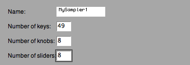
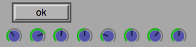
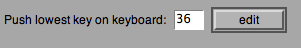
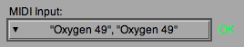
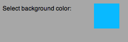

Setting Up A New Sampler
Upon opening Sampler Central you will have a menu on the upper right side of the screen. This is where you can launch the samplers that you make. To make a new sampler click 'MAKE NEW'.
This opens up a setup screen.
Type in the name you want for the new sampler, the number of keys its got, and the number of knobs and sliders.

If your keyboard has knobs and/or sliders, click 'set knobs'.
Now, move the knobs on your keyboard one by one. Make sure that the are all responding and that they are in the order you would like them to be. The row of knobs displayed represents the order they will appear on the sampler, so your first knob should move the first one in the row in the setup and so on.

When the knobs are set, click 'ok'. If you want to set them again, repeat the above.
Then do the same for the sliders.
To set the starting key on your keyboard, make sure your keyboard is not transposed, click 'edit', push the lowest key on your keyboard, then click 'ok'. A number should have appeared next to the button.

Select your MIDI keyboard from the menu. You can also change this later.

Choose the background color by clicking and dragging in the colored square.

When you are done, click 'Save New Sampler'. The program needs to restart to apply the changes so make sure you dont have any unsaved things in other samplers running and then click 'Restart'.
Your new sampler should now appear as a button in the menu on the upper right side, click it to open.